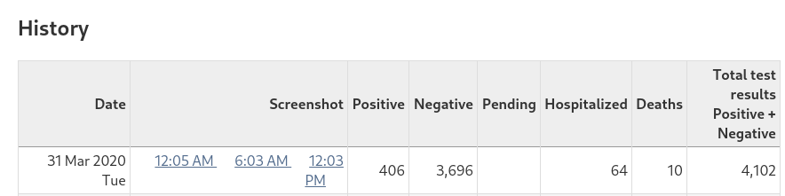
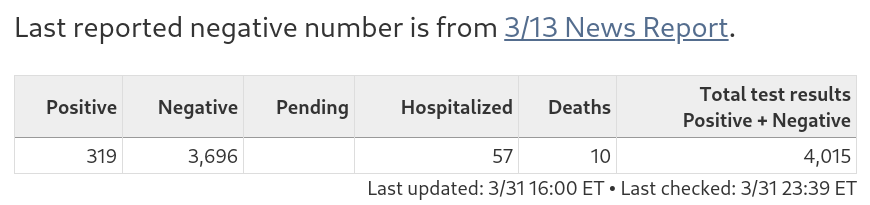

DE: 31 March data does not match screenshots
Issue number 101
tomdottom opened this issue on April 1, 2020 at 9:58 am
Daily positive listed as 406 whilst screenshots shows 264.
When I first noticed this last night (around 23:00) dashboard in question was actually showing 316.

316 aligns with latest reported figures

Comments
@una-smith #90 relates to the negative count and testing.
This issues refers to positive count and the conflicting information between screenshots, historical data for 31 March, and latest reported data.
:thinking: just looking at a public arcgis datasource and see
{'NAME': 'New Castle', 'Presumptive_Positive': 197}
{'NAME': 'Kent', 'Presumptive_Positive': 34}
{'NAME': 'Pea Patch', 'Presumptive_Positive': None}
{'NAME': 'Sussex', 'Presumptive_Positive': 88}
{'NAME': 'Reedy Island', 'Presumptive_Positive': None}
{'NAME': 'Statewide', 'Presumptive_Positive': 87}
Sum including Statewide is 406 (which matches history).
Sum excluding Statewide is 319 (which matches current reported count).
Was a similar (same?) data source used and Statewide not excluded?
Data on site now reflects expected value
There is already an issue open for DE.